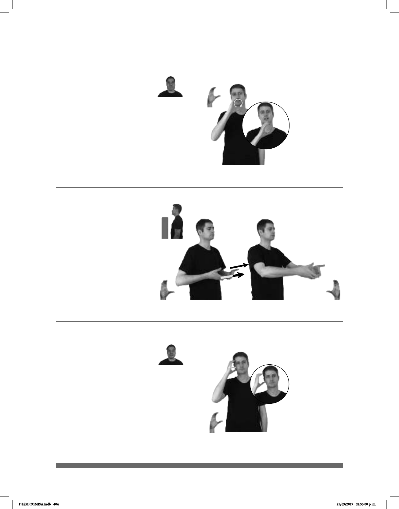

404
Seña: SM
C.1
Palma hacia la izquierda.
A la altura de la boca.
La mano se mueve
formando círculos.
Boca
semiabierta.
adj. Que tiene
temperatura alta o que transmite
calor.
(C-25)
__________¡ !__
CAFÉ CALIENTE
¡El café está muy caliente!
Seña: SS
C.3
Palmas oblicuas
hacia el centro y hacia arriba.
A la altura de la cintura.
Recto hacia el frente.
sust. f. Espacio de una
población generalmente rectilíneo
en cuyos lados se construyen las
casas, y por donde se camina para ir
de un lado a otro; para
distinguir unos de otros lleva cada
uno nombre.
Calle (C-26)
CALLE pos-MI CASA pro-ELLOS ARREGLAR
Están arreglando la calle de mi casa.
Seña: SM
C.1
Palma hacia la izquierda.
Sobre la cara.
La mano simula
varios saltos.
sust. f. Mueble
formado por una base generalmente
de madera o hierro, sobre la que se
coloca un colchón y que sirve para
acostarse y dormir.
(C-27)
CAMA NUEVA pro-YO COMPRAR YA
Yo compré una cama nueva.
DLSM COMISA.indb 404 25/09/2017 02:53:00 p. m.